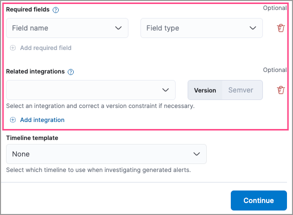

What’s new in 9.0
editWhat’s new in 9.0
editHere are the highlights of what’s new and improved in Elastic Security. For detailed information about this release, check out our release notes.
Other versions: 8.14 | 8.13 | 8.12 | 8.11 | 8.10 | 8.9 | 8.8 | 8.7 | 8.6 | 8.5 | 8.4 | 8.3 | 8.2 | 8.1 | 8.0 | 7.17 | 7.16 | 7.15 | 7.14 | 7.13 | 7.12 | 7.11 | 7.10 | 7.9
Generative AI enhancements
editManage Elastic AI Assistant using API
editYou can now interact with and manage Elastic AI Assistant using the Elastic AI Assistant API.
Create new third-party data integrations using Automatic Import
edit[preview] This functionality is in technical preview and may be changed or removed in a future release. Elastic will work to fix any issues, but features in technical preview are not subject to the support SLA of official GA features. Automatic Import uses AI to create integrations for your custom data sources.

Entity Analytics enhancements
editAutomatic recalculation of entity risk score
editEntity risk score is now automatically recalculated when you assign, change, or unassign an individual entity’s asset criticality level.
Manage asset criticality using API
editYou can now manage asset criticality using the asset criticality API.
Detection rules and alerts enhancements
editEdit fields for detection rules
editYou can now edit these fields for user-created custom rules:
-
Max alerts per run: Specify the maximum number of alerts a rule can create each time it runs.

- Required fields: Create an informational list of fields that a rule requires to function.
-
Related integrations: Create an informational list of one or more Elastic integrations associated with a rule.

Suppress alerts for machine learning and ES|QL rules
editAlert suppression now supports the machine learning and ES|QL rule types. You can use it to reduce the number of repeated or duplicate detection alerts generated from machine learning and ES|QL rules.
Use AI Assistant when writing rule queries
editWhen creating rules, you can now use AI Assistant to improve rule queries or to quickly correct them.
Bulk update custom highlighted fields for rules
editBulk add or remove custom highlighted fields for multiple detection rules.
Preview entities and alerts in the alert details flyout
editYou can now preview host and user details from the Insights tab of the alert details flyout instead of going to the Hosts or Users pages for more information. From the Correlations tab in the flyout, you can also preview alerts that are related to each other instead of leaving the flyout to access them.
Expandable alert details flyout enabled by default
editThe expandable alert details flyout is now enabled by default in multiple places throughout the Elastic Security app.
Improvements to the Timeline data exploration experience
editSeveral improvements have been made to enhance your data exploration experience in Timeline:
-
Multiple components from Discover have been incorporated, such as the sidebar and table, which allow you to quickly find fields of interest.

-
You can now toggle row renderers, which allow you to easily add or remove context from events.

-
Notes are easier to add and track from the new Notes flyout.

Response actions enhancements
editScan files and folders for malware
editElastic Defend’s new scan response action lets you perform on-demand malware scans of a specific file or directory on a host. Scans are based on the malware protection settings configured in your Elastic Defend integration policy.
Isolate and release CrowdStrike-enrolled hosts
editUsing Elastic’s CrowdStrike integration and connector, you can now perform response actions on hosts enrolled in CrowdStrike’s endpoint protection system. These actions are available in this release:
- Isolate a host from the network
- Release an isolated host
Retrieve files from SentinelOne-enrolled hosts
editUsing Elastic’s SentinelOne integration and connector, you can now retrieve files from SentinelOne-enrolled hosts and download them through Elastic Security.
Filter out process descendants
editCreate an event filter that excludes the descendant events of a specific process, but still includes the primary process itself. This can help you limit the amount of events ingested into Elastic Security.
Cases enhancements
editIntroducing case templates
edit[preview] This functionality is in technical preview and may be changed or removed in a future release. Elastic will work to fix any issues, but features in technical preview are not subject to the support SLA of official GA features. Kibana cases offer a new powerful capability to enhance your analyst teams' efficiency with templates. You can manage multiple templates, each of which can be used to auto-populate values in a case with pre-defined knowledge. This streamlines the investigative process and significantly reduces resolution time.
Case custom fields generally available
editIn 8.11, custom fields were added to cases, and they are now moving from technical preview to general availability. You can set custom field values in your templates to enhance consistency across cases.